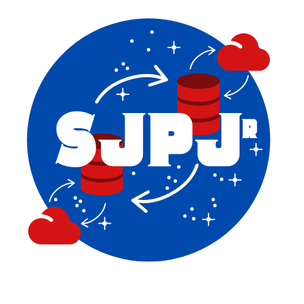

Steve
Pisani
Home
Blog
About
Resume
Steven John Pisani Jr.
Data Expert. Engineer. Maker.
Hi! I’m an engineer in the always sunny city of Philadelphia, PA.
Also, I like technology, my cat, and all things energy.